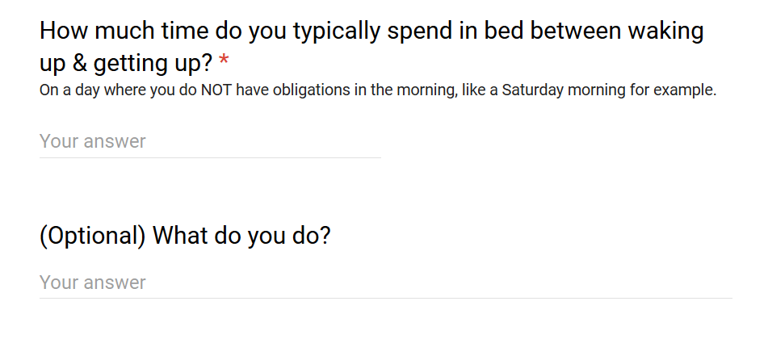

The questions no one cares about, but everyone's wondering
The question was:
On average, a member of the St. Olaf community spends about awake in bed before they get up. Out of 111 participants, just about half reported checking social media or doing something on their phone during that time. This is not too surprising. In fact, checking Facebook right before you go to bed and right after you wake up is such a prevalent trend that you can actually track people's sleep patterns just by monitoring their Facebook active times.
Averages can only tell you so much though (some people reported spending 7+ hours in bed). Here's a breakdown of how many hours people reported staying in bed for:
When I was a kid, I used to think having a hard time getting out of bed was just something I personally struggled with. Once I realized this was something almost everyone I knew complained about, I started counting: how much of my life was I wasting in this groggy half-asleep lazy haze? How many hours were we all collectively spending in bed like this? I was obsessed.
My dream was always to be that kind of person who would get up immediately as soon as I woke up. If I could save that hour every morning, that was almost like an extra full 7 hour work day per week!
What had always been peculiar to me was that this seemed to be something that everyone agreed was a bad thing. Everyone seemed to admit to spending longer than they intended scrolling through their newsfeed in the morning.
And yet, it wasn't something most people seemed capable of changing.
"Of course!" you say. And you probably do get up right away when you need to, but what would it take to always get up as soon as you wake up? To waste absolutely no time?
I had tried to will myself out of bed in the mornings. Sometimes it would work, but most of the time it didn't. I began getting more obsessed. I embarked on this semi-militant campaign against overstaying in bed throughout my childhood. It sounds stupid. And it is. We all know we can get up if we want to.
But then, why don't you?
This tension between knowing full well that you are capable of something and wanting to do it, but not actually doing it, kind of reminds me of Richard Feynmann's account of what's it like to be hypnotized. It always felt like he had full control of his actions throughout and could choose to disobey – he just didn't.
I began regarding overstaying in bed as absolute evil. I had to fight this. I would not be hypnotized. I tried various things throughout my life. These have been the most succesful:
The first is such a small change, with such drastic quality-of-life implications. Every day is wholly better knowing I wasted no time and going about my morning routine without the daily flood of messages & newsposts.
The second requires a lot more practice & patience. I've found that you can train yourself to get out of bed before your mind has a chance to really think about how tired you feel and how you'd much rather stay in. You would then be acting more on instinct and disregarding the arguments in your head. (I've found this to be good life advice in general: knowing what the right decision is and keeping it in your mind is important so that when the time comes, you can make this decision, even if you don't feel like it).
So what all do people do in bed during that time? As always, the full data is available here. Here are some from the people who spend over an hour in bed:
Just lay in bed, go back to sleep, or be on my phone.
Phone, try to go back to sleep, Netflix
Listening to music, laying on the bed but not actually doing anything.
Read articles, respond to emails
What I was surprised to learn from this analysis was that staying in bed was not the absolute evil I took it be. Some people actually had a pleasant experience during that time:
eat breakfast (served by husband); read books; talk with husband and son; play with cats; catch up on email.
Parent. I can't not wake up too early. So I just work to stay there and enjoy the quiet.
At this point you'd think I'd get better at phrasing these questions to avoid confusion. The question "What do you do?" was interpreted by a lot of people to mean "what do you do in life" as opposed to "in bed". The one person who wrote that they spend 8 hours in bed said they do "BM Music Major Vocal Performance".
I fear we'll never know what this music major does in bed for 8 hours...
– Omar